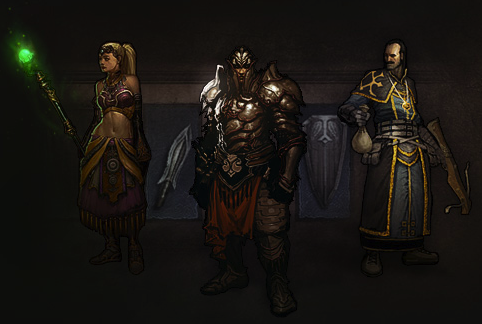
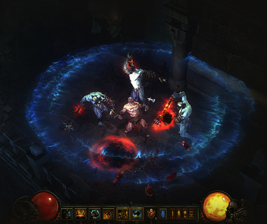
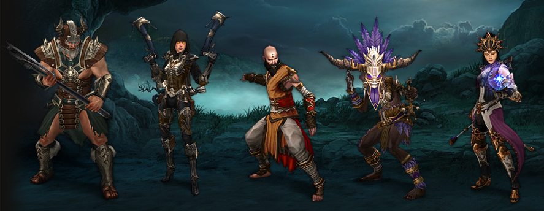
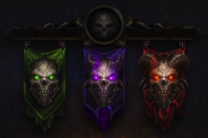
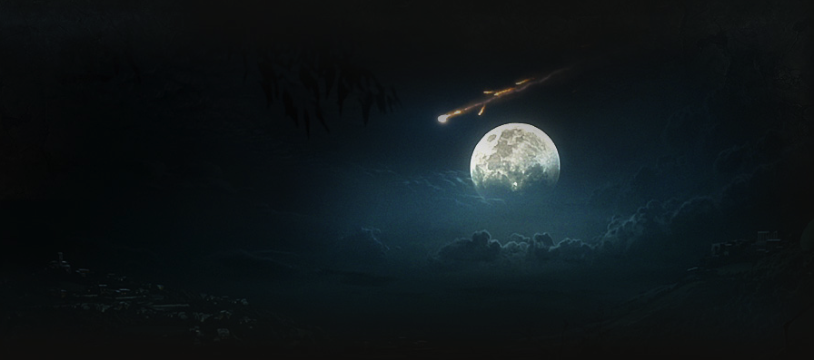

SKILL RUNES
In Diablo III, runes give you unprecedented control over your skills and powers, changing elemental damage types, accuracy, and area of effect; adding new debilitating effects like slows and stuns; and even altering the nature and appearance of your abilities.

FOLLOWERS
Sometimes a hero needs a helping hand. Followers, champions brave enough to join you in battle against the Burning Hells, are similar to Henchmen from Diablo II in that they can be outfitted with relevant arms and armor, but they're upgradable with their own skills, allowing you to customize how they fight and what passive benefits they convey. They're also fleshed-out personalities in their own right.
CRAFTING & ARTISANS
As you meet and assist people during your journey through Sanctuary, some of the world's most talented craftsmen will sign on to travel with you. These artisans are capable of putting the materials you'll find in the wilderness or salvage from unneeded items to good use, hammering out customized suits of armor or combining gems to unlock their powers.
Invest time and money into an artisan's training, fill their shop with worthy materials, and they'll keep improving the quality of items they can produce, augment or combine for you.

SEAMLESS INTERACTION
To push Diablo's blistering fast pace even harder, we've made some changes to Diablo III's character and inventory 'management' systems, so you'll spend more time using new powers to slay your enemies and get loot. Rather than hoarding skill points and holding off on improving your abilities while you wait levels for an ideal build, Diablo III lets you "respec" your skills readily to experiment with interesting choices. You can also share items between all of your characters just by placing them in your stash, and you can identify unknown items and teleport back to town without needing to collect scrolls and tomes to do so.

COMBAT: FASTER, SMARTER, DEEPER
Combat in Diablo III follows the established model of clicking on your squealing, snarling enemies and watching the carnage – but it's deeper and richer. Scads of defensive abilities for each class mean more tactical possibilities; cooldowns on potions guarantee that choosing your targets carefully and controlling the battlefield is as important as what you bring with you to a fight, and the presence of health globes ensures that mobility can mean the difference between life and death.
IMPROVED CONTROLS
Diablo III adds new control options to the classic Diablo II hotbar, including full customization of all shortcut and mouse buttons, to make using your skills during combat quicker than it's ever been.
AUCTION HOUSE
Items are just as important to Diablo III as they've been throughout the series, so we've added an auction house for faster, easier trading without the potential for scamming and abuse that's existed in the past. Items can now be bought and sold without needing to count on the trustworthiness of strangers to make sure your exchange goes through smoothly.

CLASSES AND SKILLS
There are five classes in Diablo III; four (the wizard, witch doctor, demon hunter and monk) are brand-new, and the returning barbarian has many, many new destructive tricks for tearing through foes. Each class has a unique resource system and appropriately different playstyle – no longer do all heroes share the single resource of mana.
MONSTERS AND ITEMS
Diablo III has more different, distinct monsters than Diablo I and II, and these monsters all bring their own special destructive abilities, some new and some familiar. The variety of Diablo III's random items is similar to that of the other Diablo games (though we've included Legendary items), but we've added thousands of new combinations, many with unique abilities and previously unseen properties.
New weapon and equipment types, like the demon hunter's one-handed crossbows and witch doctors' mojos, also provide a great deal of class-specific flavor.

PVP ARENAS
In past Diablo games, fighting with other players acquired something of a storied history. In Diablo III, we wanted to create a more formalized play-space for heroes to test their mettle. Diablo III's arenas are designed exclusively for PvP combat, and so they have different level layouts and rates of health spawning, along with matchmaking to ensure more evenly balanced battles.

EXPANDED DIFFICULTY
The advanced Nightmare and Hell difficulty modes in Diablo III add new progression options to the game not found on the Normal setting – increasingly powerful and intimidating armor sets, potent unique items, high-level runes and exclusive recipes and upgrades for artisans. Monsters grow increasingly more dangerous in subsequent difficulty levels.
In the brutal new Inferno mode, available only once the game's been beaten on Hell difficulty, monsters outstrip players in level range. Inferno difficulty is an epic challenge intended for players who have reached the game's level cap, and it offers epic rewards as well.
ACHIEVEMENTS
You'll be able to show off your achievements with a battle standard, a banner visible to all players on Battle.net that will be a visual representation of your accomplishments in Diablo III. And you should expect even more ‘endgame' additions to come - ones that'll let you pursue unique goals and achieve more glory in the world of Sanctuary than ever before.

NEW EPIC STORYLINE
Diablo has always been a macabre take on a classic theme – the battle between good and evil – set in a world of fragile people who have somehow persevered through chaos and tragedy. In Diablo III, we're taking this story to new heights (and depths), and exploring parts of Sanctuary we've only hinted at in the past.
Welcome, and welcome back.
